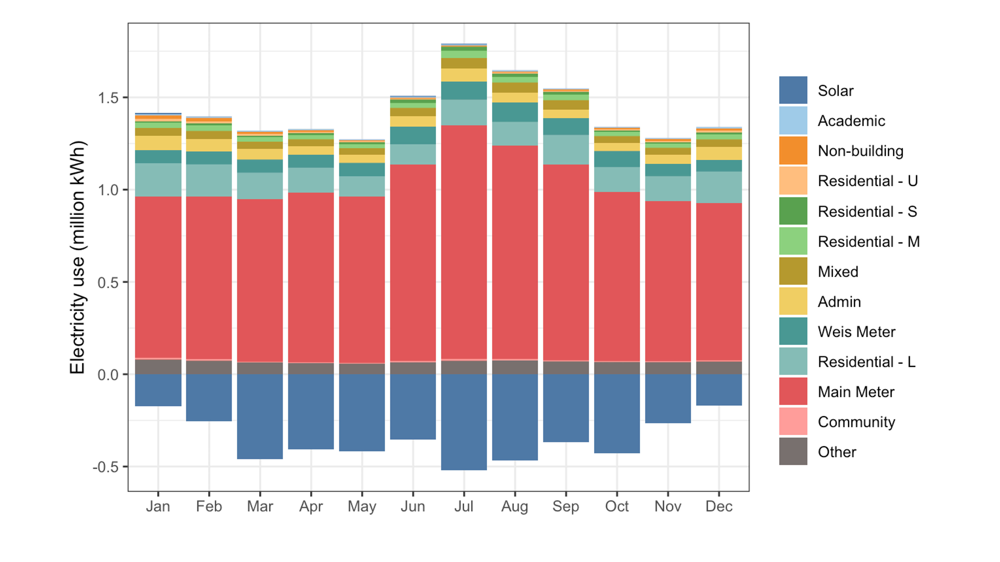
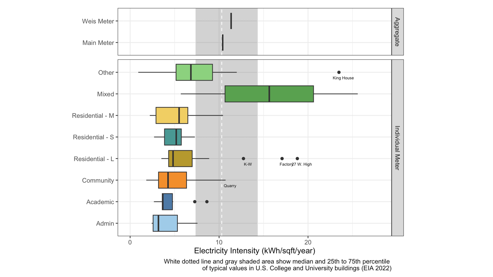

Here we share a high-level summary and set of recommendations arising from our analyses taken as a whole.
In FY25 Dickinson managed ~1.9 million square feet of building space. This was associated with:
The college also realized significant savings from the solar array:
Electricity use in many campus buildings showed a strong seasonal pattern, consistent with the role of electricity in heating, cooling, and ventilation (HVAC). Across Dickinson as a whole, cooling is a larger driver of electricity usage than heating, because heating in most buildings relies primarily on natural gas. This helps to explain why campus electricity use peaked in summer, even though that is a time of low student occupancy.

| Version | Author | Date |
|---|---|---|
| e2c0776 | maggiedouglas | 2026-08-19 |
Benchmarking against other U.S. College and University buildings as reported by the Energy Information Administration (2022) shows that:

| Version | Author | Date |
|---|---|---|
| e2c0776 | maggiedouglas | 2026-08-19 |
Due to cooling demand, summer is a time of high electricity usage but low residential occupancy. Moving students into fewer, more energy-efficient buildings would allow the remaining buildings to be maintained at a higher temperature and reduce electricity usage. This would also help the college meet its agreements with our energy supplier to help manage peak demand. Buildings can be ranked by their electricity efficiency using the interactive tables here: Small Residence Halls, Medium Residence Halls, Large Residence Halls. This strategy is especially important because Cumberland County is likely to become 2-11oF warmer by late century under climate change (Leary 2025). Projecting from our FY25 results, a 5oF increase in summer temperatures would require an additional 3800 kWh per day ($300/day at current rates) for the Main Meter alone.
New buildings and renovations provide an opportunity to advance (or set back) energy savings. We recommend the College bring in appropriate staff from Facilities Management to consult on such projects early in the design process to identify opportunities for energy efficiency and conservation. Research suggests that retrofits of older university buildings with strategies such as improved insulation, window replacement, and installation of building automation systems (BAS) can provide overall energy savings of 10-30% (Chung & Rhee, 2014). Similarly, implementation of BAS can reduce electricity use in office buildings by up to 50% (Nikdel et al., 2018). Our analyses suggest that such strategies are already yielding benefits at Dickinson, for example through the use of BAS and improved insulation in Althouse Hall and the use of BAS in 50 Mooreland Ave. Other buildings suggest opportunities to implement more efficient technologies, for example for cooling and ventilation in Allison Hall.
Furthermore, we recommend using electricity data to assess the effect of renovations on building performance. For example, our analyses could be expanded to include electricity use in Drayer Hall prior to its 2023 renovation, enabling a direct comparison of pre- and post-renovation energy consumption (see Drayer Hall case study). The relatively new Durden Athletic Complex could also provide an interesting pre- and post- comparison since FY25 coincided with a period of construction in that complex.
We recommend that Dickinson consider developing an electricity orientation to help students learn about the electricity usage associated with their daily activities and strategies for reduction. Such an effort could also provide site-specific information in residences with special heating and cooling systems (e.g. Treehouse). The potential of this approach was demonstrated by a case study at Radford University in Virginia (Wisecup et al. 2016). Energy conservation programming with undergraduate students reduced per-student electricity consumption by 13-14% in residence halls. The Center for Sustainability Education has considerable experience designing and implementing effective programming in this vein.
Finally, building performance depends not only on characteristics and use inside of buildings but also on external characteristics and the surrounding environment. Dickinson’s buildings have a mix of light and dark roof colors. Light-colored roofs reflect light and so reduce cooling needs in the summer, but may also increase heating needs in the winter. A simulation of the effects of reflective roofs on commercial buildings found that in Pennsylvania’s climate the benefit of cooling outweighs the heating penalty, with average savings of $0.29/m2 of roof area (Levinson & Akbari, 2010). Similarly, deciduous shade trees on the south and west sides of buildings cast shade during the summer (but minimally during winter), resulting in overall energy savings (Akbari & Konopacki, 2005). These savings during the cooling season are particularly valuable as summer temperatures continue to rise and electricity rates are frequently high due to peak demand. Dickinson Professor Allyssa Decker has expertise in green infrastructure that could inform campus efforts in this direction. Instructor Sarah Sterner recently worked with students to create an updated map of the campus tree canopy that could guide strategic improvements as well (Dickinson College Campus Tree Map, n.d.).
While we were able to learn quite a lot from available data, we also identified a few areas where improved data collection and/or organization could facilitate new insights:
Building-level data on electricity use is valuable to identify factors driving patterns and potential electricity savings. In FY25 there were many large buildings without usable, disaggregated electricity use data (e.g. Waidner-Spahr Library, Rector Science Complex, the Kline Center). We recommend checking our existing sub-meter system to ensure it is recording data as intended, and prioritizing large and potentially high-use buildings for additional submeters.
Electricity data from PP&L is organized by the name of accounts, which often do not match building names used in internal spreadsheets with building characteristics. This makes it exceedingly difficult to join data for analysis. Developing a more consistent approach to naming buildings and organizing data throughout internal spreadsheets and external accounts would facilitate more efficient analysis. Similarly, it would be valuable to have a central database of building characteristics, including HVAC systems.
Currently, occupancy data for residential buildings is quite patchy, with data relatively available during the academic year but limited over summer and winter breaks. We recommend developing a more consistent approach to recording occupancy information for student and guest residents. These data could be used to gain a better understanding of the relationship between occupancy and electricity usage, and may also benefit staff within Residential Life. Developing such a system might make for a good student-faculty project for a Data Analytics or Computer Science major.
We hope that our findings support continued action toward fiscal and environmental sustainability at Dickinson. Please use the drop-down menus to explore more detailed findings related to specific building categories and our building case studies. Thank you for reading!
Akbari, H., & Konopacki, S. (2005). Calculating energy-saving potentials of heat-island reduction strategies. Energy Policy, 33(6), 721-756. https://doi.org/10.1016/j.enpol.2003.10.001
Chung, M. H., & Rhee, E. K. (2014). Potential opportunities for energy conservation in existing buildings on university campus: A field survey in Korea. Energy and Buildings, 78, 176-182. https://doi.org/10.1016/j.enbuild.2014.04.018
Dickinson College Campus Tree Map. (n.d.). Accessed 8/19/2026: https://dickinsongis.maps.arcgis.com/apps/instant/sidebar/index.html?appid=7bd1829e83ed4488b70f2ad7c04a1b62¢er=-77.2001;40.2026&level=15
Energy Information Administration (EIA). (2022). 2018 Commercial Buildings Energy Consumption Survey (CBECS). https://www.eia.gov/consumption/commercial/
Leary, N. (2025). Climate Risks and Resilience in Cumberland County: Synthesis Report. Center for Sustainability Education. Dickinson College. https://www.dickinson.edu/download/downloads/id/16410/climate_risks_and_resilience_in_cumberland_county_synthesis_report.pdf
Levinson, R., & Akbari, H. (2010). Potential benefits of cool roofs on commercial buildings: conserving energy, saving money, and reducing emission of greenhouse gases and air pollutants. Energy Efficiency, 3(1), 53. DOI: 10.1007/s12053-008-9038-2.
Nikdel, L., Janoyan, K., Bird, S.D., and Powers, S.E. (2018). Multiple perspectives of the value of occupancy-based HVAC control systems. Building and Environment, 15-25. https://doi.org/10.1016/j.buildenv.2017.11.039.
Wisecup, A. K., Grady, D., Roth, R. A., & Stephens, J. (2017). A comparative study of the efficacy of intervention strategies on student electricity use in campus residence halls. International Journal of Sustainability in Higher Education, 18(4), 503-519. https://doi.org/10.1108/IJSHE-08-2015-0136
R version 4.6.0 (2026-04-24)
Platform: x86_64-apple-darwin20
Running under: macOS Ventura 13.7.8
Matrix products: default
BLAS: /Library/Frameworks/R.framework/Versions/4.6-x86_64/Resources/lib/libRblas.0.dylib
LAPACK: /Library/Frameworks/R.framework/Versions/4.6-x86_64/Resources/lib/libRlapack.dylib; LAPACK version 3.12.1
locale:
[1] en_US.UTF-8/en_US.UTF-8/en_US.UTF-8/C/en_US.UTF-8/en_US.UTF-8
time zone: America/New_York
tzcode source: internal
attached base packages:
[1] stats graphics grDevices utils datasets methods base
loaded via a namespace (and not attached):
[1] vctrs_0.7.3 cli_3.6.6 knitr_1.51 rlang_1.2.0
[5] xfun_0.59 stringi_1.8.7 otel_0.2.0 promises_1.5.0
[9] jsonlite_2.0.0 workflowr_1.7.2 glue_1.8.1 rprojroot_2.1.1
[13] git2r_0.36.2 htmltools_0.5.9 httpuv_1.6.17 sass_0.4.10
[17] rmarkdown_2.31 jquerylib_0.1.4 evaluate_1.0.5 tibble_3.3.1
[21] fastmap_1.2.0 yaml_2.3.12 lifecycle_1.0.5 whisker_0.4.1
[25] stringr_1.6.0 compiler_4.6.0 fs_2.1.0 Rcpp_1.1.1-1.1
[29] pkgconfig_2.0.3 rstudioapi_0.19.0 later_1.4.8 digest_0.6.39
[33] R6_2.6.1 pillar_1.11.1 magrittr_2.0.5 bslib_0.11.0
[37] tools_4.6.0 cachem_1.1.0